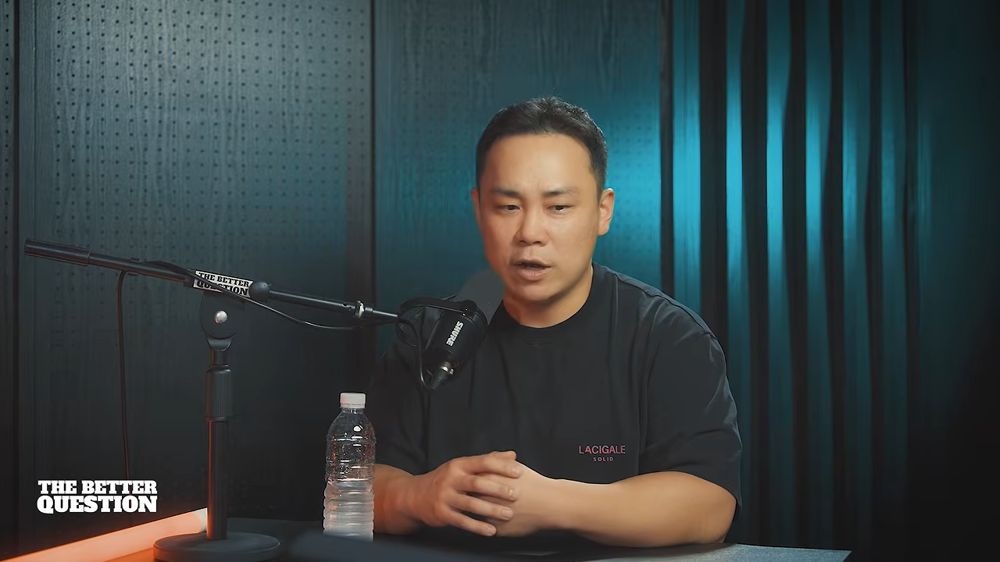

누가, 어떻게 회사를 키웠나
최재명 대표는 지난해 기준으로 메타·네이버·구글·틱톡·카카오에 집행한 광고비가 약 3,500억 원이라고 해요. 요즘 광고는 보통 ROAS 200%를 보고 돌리니까, 매출로 치면 7천억 원쯤을 만들어 본 셈이라고 설명해요.

회사 구조
지주사 체제예요. 지주사 콘크리트 파머스 아래에 마케팅 대행사 마케팅 모먼트, 유통 전문 회사 3초마을, 화장품 회사와 신규 화장품 브랜드 두 개가 있어요. 따로 정육점 사업도 하는데, 타겟에게 릴스로 싸게 노출시키는 방식을 거기서도 쓴다고 해요. 그룹 매출에서 가장 큰 몫은 지금도 대행사예요.
매출은 기준에 따라 달라요. 재무제표 기준으로 올해 그룹 전체가 500억~600억 원, 그중 브랜드가 350억 원쯤이라고 해요. 대행사가 집행한 광고비를 매출로 잡으면 계열사를 합쳐 1천억 원 규모예요. 그는 대행사들이 광고비를 매출로 잡아 부풀리는 게 심하다며, 자기 회사는 그렇게 잡지 않는다고 덧붙여요.
가설주의 대신 실전주의
브랜드를 시작한 건 고객사에게 들은 한마디 때문이었어요. 광고를 그렇게 잘하면서 왜 직접 리스크를 지고 브랜드를 하지 않느냐는 거였죠. 그래서 마케터들이 흔히 기대는 '가설' 대신, 자기 돈을 써서 실제로 통하는 성공 공식을 찾아 고객에게 주기로 했어요. 그 테스트 브랜드가 지난해 약 200억 원을 했고, 거기서 찾은 공식을 고객사에도 적용했다고 해요.
회사가 주로 하는 일은 미디어 커머스예요. 메타·구글·네이버 같은 매체에 영상·이미지 광고를 만들어 돌리고 개선해요. 광고로 할 수 있는 건 노출을 싸게 많이 하고 방문자를 싸게 데려오는 데까지예요. 구매로 이어지려면 랜딩 페이지와 객단가까지 손봐야 해서, 일이 자연스럽게 컨설팅으로 깊어졌다고 해요.
쇼핑몰 창업에서 대행사 대표까지
처음엔 친구와 컵·퍼즐·마우스패드에 사진을 넣어 주는 커스텀 굿즈 쇼핑몰을 했어요. 사업이 커지지 않아 접은 뒤 이커머스 회사 팀장으로 들어가 인하우스 마케터로 8~9년 일했어요. 그 경험을 마케팅 커뮤니티 아이보스에 '근육돌이'라는 닉네임으로 연재하다가 강의와 컨설팅 제안이 이어졌고, 2019년에 창업했어요.
노하우를 공짜로 푼 이유는 이래요. 쇼핑몰을 하던 몇 년 사이에도 매출이 나는 채널이 지식인에서 블로그, 페이스북으로 3~6개월마다 바뀌었어요. 매체 지식은 쥐고 있어도 금방 낡지만, 사람이 왜 움직이고 왜 사는지를 보는 힘은 쌓인다는 걸 깨달은 거죠. 그 시절 1년 동안 스마트스토어 100곳쯤을 컨설팅했다고 해요.
체력, 그리고 사람
'체력은 곧 매출'이 그의 오랜 구호예요. 체력이 없으면 집중력이 떨어지고 할 일을 미루는 습관이 생긴다고 봐요. 진행자도 운동을 해 본 사람들이 힘들 때 한 번 더 버티는 습관을 갖고 있다고 맞장구쳐요.
회사가 커진 비결로는 사람을 꼽아요. 브랜드는 이사가, 회사 구조와 시스템은 동업자가 맡고, 본인은 큰돈이 드는 결정만 했어요. 한 브랜드가 6~8개월 동안 적자 6억 원까지 갔을 때 접자고 하자, 이사가 한 달만 더 기다려 달라고 했어요. 기다렸더니 매출이 터졌고, 그때 사람을 믿고 권한을 어디까지 줄지를 배웠다고 해요.
면접에서는 같은 질문을 여러 번 해서 답이 일관된지 봐요. 여럿이 한 프로젝트를 혼자 다 했다고 말하는 사람은 뽑지 않고, '이만큼만 맡았고 나머지는 배우러 왔다'고 말하는 사람을 뽑아요. 반대로 서두르다 추천만 믿고 데려온 사람, 오래 함께했는데 광고주를 빼서 나간 사람도 있었다고 털어놔요.
광고비를 크게 써 봐야 보이는 것
광고비를 크게 쓰면 먼저 시장의 크기가 보인다고 해요. 기미 화장품을 예로 들어요. 기미는 노화의 신호라 40대 이상 여성이 주 고객인데, 전환 캠페인 기준으로 온라인에서 받을 수 있는 사람은 400만 명쯤이라고 봐요. 그 이상을 받으려 하면 대부분 의미 없는 트래픽이에요. 나이는 맞아도 온라인에서 아예 사지 않는 사람들이죠. 그때는 오프라인처럼 새 결제 창구를 찾아야 해요. 이렇게 큰 트래픽을 받아 본 게 네 번쯤인데, 객단가와 전환율이 거의 비슷했다고 해요.
예상과 다른 곳에서 팔려요
누가 온라인에서 돈을 많이 쓰냐는 질문에는 '다 많이 쓴다'고 답해요. 대신 어디서 쓰는지가 달라요. 영상에서 든 예는 이래요.
| 지면 | 예상 | 실제로 잘 팔린 것 |
|---|---|---|
| 네이버 GFA (블로그 글 사이 배너) | 여성 고객 위주 | 고등어(구매자의 70%가 남성), 남성 화장품, 남성 활력제, 에너지 드링크 |
| 유튜브 여성 패션 룩북 영상 | 여성 시청자 | 남성 활력제. 실제 시청자는 남성 비율이 높아요 |
| 특정 성향의 유튜브 채널 | — | 건강기능식품. 시청자 나이대가 맞아요 |
유튜브 사례는 크리에이터에게 직접 광고를 붙이는 게 아니에요. 유튜브가 붙이는 광고 자리를 지면으로 지정해 타기팅하는 거예요. 여드름 고민이 있는 사람은 여드름 영상을 볼 거라는 식의 직선적인 생각보다, 이렇게 '한 끗 비틀린' 곳에서 효율이 나는 경우가 많다고 해요.
타겟을 이해하는 방법
그런 지면을 찾는 방법으로는 계정을 여러 개 만들라고 권해요. 타겟의 나이대와 내 제품에 맞춰 각 계정에 콘텐츠를 계속 학습시키면, 그 계정 피드에 타겟이 보는 영상이 뜨기 시작해요. 그러면 그 사람들이 무엇을 보고 사는지 이해할 수 있어요.
진행자는 이걸 '답은 고객과 현장에 있다'는 말로 정리해요. 더 큰 치트키를 찾는 게 오히려 돌아가는 길이고, 내가 마주할 사람이 어떻게 생각하고 사는지를 깊이 이해하는 게 기법 하나 익히는 것보다 중요하다는 거예요.
대행사가 수수료를 위해 광고비 증액을 강요하지 않느냐는 질문에는, 보통은 강요가 아니라 목표를 넘기면 보상을 주는 식으로 협상한다고 답해요. 자기 회사는 ROAS 기준으로 일해서 고객사와 이해관계가 부딪친 적은 없다고 해요.
대행사 고르기, 그리고 직접 돌려 보기
대행사를 쓰고 싶은데 '눈탱이'를 맞지 않으려면 무엇을 봐야 할까요. 최재명 대표가 꼽은 기준은 이래요.
| 기준 | 이유 |
|---|---|
| 세팅·운영만 해 준다는 곳은 피해요 | 매체 자동화로 세팅은 '딸깍' 수준이 됐어요. 지금 사람이 통제할 수 있는 건 콘텐츠뿐이에요 |
| 담당자와 합이 맞는지 봐요 | 성향, 대화가 통하는지, 언제든 연락이 되는지가 성과로 이어져요 |
| 광고비가 적으면 직접 해요 | 직접 해 본 사람만 남에게 일을 정확히 시킬 수 있어요 |
500만 원을 맡기면 생기는 일
광고비 500만 원을 맡기면 보통 수수료 15%, 즉 75만 원이 대행사에 가요. 회사 운영비를 빼면 실제 담당 마케터에게 돌아가는 몫은 훨씬 적어요. 그러니 그 돈으로 모든 걸 요구하기는 어렵다는 거예요.
그래서 직접 운영하다가 일이 너무 커졌을 때 맡기는 게 맞다고 해요. 그래야 조건을 걸 수 있어요. 'CPC가 얼마를 넘으면 광고를 꺼 달라', '우리는 이런 타겟에 이런 콘텐츠가 잘 나왔는데 이렇게 해 줄 수 있느냐'처럼 똑 부러지게 물을 수 있어야 해요. 그런 광고주가 오히려 더 많이 얻어 가요.
진행자도 '못 하니까 맡기면 된다'고 정리해 버리는 순간 사고가 난다고 거들어요. 대행사를 서너 곳 옮겨 다니며 지식이 쌓이면, 곳당 1천만 원씩 해서 이미 수천만 원을 수업료로 낸 셈이라는 거죠. 차라리 한 달 200만~300만 원이라도 직접 집행하며 익히는 게 빨라요.
최소한의 지식은 매체들이 무료로 제공하는 공식 교육으로 쌓을 수 있다고 강조해요. 네이버, 메타, 구글 모두 있다고 해요. 추측이 아니라 그 매체의 알고리즘을 정확히 알려 준다는 게 장점이에요.
문어발이 아니라 한 줄기
대행, 유통, 화장품, 정육점까지 하니 문어발처럼 보이지만, 그는 자신이 한 우물만 판다고 말해요. 각 사업은 그 분야를 잘 아는 사람이 맡고, 줄기는 모두 퍼포먼스 마케팅이에요. 원하는 타겟에게 싸게 많이 노출시키고 전환시키는 능력이죠. 관리·회계·재무는 나중에 전문가를 붙여도 되지만, 이익을 내며 매출을 만드는 게 가장 어렵고 그 출발점이 퍼포먼스 마케팅이었다고 해요.
AI가 대행사의 일을 가져가요
AI 때문에 마케팅이 쉬워졌다는 말도, 더 치열해졌다는 말도 있어요. 대행사 입장에서는 어떨까요. 최재명 대표는 '아주 큰 위기'라고 답해요. 대행은 결국 남에게 일을 맡기는 건데, 그 맡길 대상이 사람이 아니라 프로그램이 되고 있기 때문이에요. 자기 회사는 앞서가고 있어서 나쁘지 않지만, 업계 전체로는 위기라고 봐요.
클로드가 광고 관리자를 직접 다뤄요
예전에 대행사가 수수료를 받고 하던 메타 광고 세팅과 운영을 이제 클로드 같은 LLM이 해요. 클로드를 메타 광고 관리자에 연결하면 이런 일을 해요.
- 광고 소재가 있는 위치만 알려 주면 가져가서 세팅하고, 추적 링크까지 달아요.
- 타겟도 알아서 잡아요.
- '광고비를 얼마 이상 썼는데 성과가 이 정도면 끈다' 같은 기준을 걸어 두면 그대로 끄고, 다음 날 아침에 보고해요.
그는 이걸 에이전트라고 불러요. 다만 그 기준은 사람이 가르쳐야 해요. 내 제품의 원가율에 비춰 광고비를 얼마나 써야 순이익이 남고 세금이 얼마 나가는지를 알아야 하죠. 그 기준만 잘 잡아 두면 사람보다 더 잘한다고 해요.
남은 싸움터는 콘텐츠예요
그래서 대행사들은 요즘 저마다 '먹히는 소재를 싸고 많이 만든다'고 홍보해요. 하지만 정말 싸고 많이 만드는 곳은 못 봤다고 해요. 그의 방식은 AI 구독비 약 600달러로 영상 3,700여 개를 만든 거예요. 한 편에 약 300원이고, 모두 1분이 넘는 영상이에요. 반면 흔히 보이는 AI 영상 자동화는 한 편에 4만~5만 원, 많게는 10만 원이 든다고 해요.
이미지보다 영상이 효과가 좋은 이유도 짚어요. 이미지는 자동화가 쉬워 이미 넘쳐나요. 영상에는 기승전결로 설득의 흐름을 담을 수 있고 효능을 눈으로 보여 줄 수 있어요. 예전엔 이미지가 잘 되던 네이버 GFA도 지금은 영상을 같이 돌리지 않으면 효율이 낮다고 해요.
대행사가 사라진 자리, '팔란티어 모델'
브랜드가 AI로 직접 소재를 만들게 되면 대행사는 필요 없을까요. 그는 팔란티어 같은 모델이 나올 거라고 봐요. 컨설턴트가 고객사에 출근해 회의에 다 들어가고, 담당자들의 결과물을 받아 AI로 다시 정리하는 방식이에요. 회사 전체를 이해한 뒤 온톨로지를 짜 주는 거죠.
진행자는 경부고속도로를 지나며 보이는 수많은 공장과 제조사가 모두 이런 서비스의 고객이 될 수 있다고 말해요. 둘 다 특정 도메인 지식이 있고 영업력이 조금만 있으면, 앞으로 3년쯤은 큰돈을 벌 수 있는 일로 봐요.
0원에서 3억까지, 광고 소재 공장
AI 영상을 시작한 데는 반대가 컸어요. 직원들은 AI로는 영상이 안 된다고 했고, 고객사 대표들도 퀄리티가 떨어진다며 AI 소재를 거부했어요. 그래서 직접 해 보기로 하고 하루 12시간씩 매달렸다고 해요.
모델마다 비용을 다 재 봤어요
생성형 AI는 직접 뽑아 보지 않으면 어떻게 지시해야 잘 나오는지 알 수 없어요. 해외 자료는 많지만 한국에 맞는 결과를 얻으려면 시행착오가 많이 필요하고, 그게 다 토큰 비용이에요. 대부분 여기서 포기한다고 해요.
그는 클링에 500만 원을 충전해 다 써 보고, Veo를 API로 부를 때와 구글의 Flow에서 뽑을 때의 비용, 다른 서비스들까지 모두 결제해 비교했어요. 그 결과는 이래요.
- 영상 생성은 구글이 가성비가 가장 좋아요.
- 이미지는 지금은 GPT가 가장 잘 만들어요.
- 시댄스처럼 비싼 모델은 소재를 양산하는 '공장'용으로는 맞지 않아요.
비싼 모델이 공장에 안 맞는 이유는 왜곡 때문이에요. 손가락이 하나 더 나오거나 우리 제품이 아닌 게 나오는 식이죠. 1분짜리를 뽑으면 왜곡이 두세 군데는 꼭 생기고, 그만큼 다시 뽑아야 해요. 사람을 안 쓰려고 자동화했는데 돈이 더 드는 상황이 되는 거예요. 게다가 API를 쓰는 비용이 사람당 1천만 원씩 나오면서, 업체들이 API를 열어 주던 흐름에서 잠그는 흐름으로 바뀌고 있다고 해요. 그래서 싸게 조립하는 법은 경험해 봐야만 안다는 거예요.
0원에서 3억까지
마침 이사가 새 화장품 브랜드를 하나 더 낸다고 했어요. 영상·이미지 디자이너 한 명이 한 달에 20개쯤 만들 계획이었는데, 2주를 기다려 보니 하루에 100만 원씩 적자가 났어요. 그래서 자신이 만들어 둔 영상 자동화를 붙였어요.
- 월 매출은 0원에서 한 달 만에 3억 원이 됐어요.
- 광고비는 약 2억 원을 썼어요. ROAS로 치면 약 150%예요.
- 그 한 달 동안 만든 광고 소재는 약 3,755개이고, 모두 영상이에요.
- 화장품은 원가율이 8~10%쯤이라 이 정도 광고비는 출혈이 아니라고 해요.
광고 소재 공장의 구조
사람이 하는 일은 지시와 컨펌뿐이에요. 따로 만든 레퍼런스 수집 에이전트가 대시보드를 채워 두면, '최근 일주일 조회수 기준으로 가져와서 우리 제품을 역기획해 만들어 줘'라고 시켜요. 그다음 과정은 이래요.
| 단계 | 담당 | 하는 일 |
|---|---|---|
| 1. 분석 | 제미나이 (눈 역할) | 조회수가 높은 경쟁사 영상을 보고 대본과 장면을 뽑아요. 유튜브라는 큰 영상 플랫폼 덕에 영상 이해가 특히 강하다고 봐요 |
| 2. 기획 | 클로드 (기획자) | 우리 제품으로 역기획해요. 대사, 장면 프롬프트, 카메라 앵글까지 써요 |
| 3. 장면 이미지 | GPT | 장면별 이미지를 만들어요. 1분짜리 퍼포먼스 영상이면 17장쯤이에요 |
| 4. 영상화 | Veo 3.1 | 17장의 이미지를 영상으로 바꿔요 |
| 5. 음성 | 일레븐랩스, 타입캐스트 | 대본에 맞춰 TTS(글을 읽어 주는 AI 음성)를 만들어요 |
| 6. 편집 | 직접 만든 스킬 | 대본을 단어 단위로 쪼개고, 1~2초마다 장면이 바뀌도록 영상 조각을 배치해요 |
| 7. 출력 | — | 프리미어·애프터 이펙트 프로젝트 파일(레이어 포함), 소스, TTS, 완성 MP4를 폴더로 정리해 줘요 |
프로젝트 파일로 나오니 고치고 싶은 부분은 사람이 손보면 돼요. 먼저 한 편이 나오면 직원 컨펌하듯 수정할 점을 알려 주고, 그다음 '100편 만들어'라고 하면 변주를 줘서 이틀 만에 100편이 나와요.
하네스는 덜어낼수록 좋아요
예전에는 하네스를 촘촘하게 붙이는 게 추세였는데, 요즘은 오히려 덜어낸다고 해요. 에이전트가 좋아져서, 꼭 지킬 것과 창의성의 방향만 주면 더 좋은 결과를 가져오기 때문이에요.
창의성을 주는데 창의성의 방향만 주면 돼요. 나는 예를 들어 여드름이 이렇게 터졌으면 좋겠어.
— 영상 53:43
그러면 각도와 부위가 다른 여러 결과물이 나오고, 사람은 고르기만 하면 돼요. 얼굴에 바르는 크림인데 등드름까지 만들면 그때 '등은 아니야'라고 방향을 잡아 줘요. 기획의 큰 틀은 클로드의 Fable 모델로 잡고, Opus가 받아서 실행하게 한다고 해요. 클로드 앱은 쓰지 않고 터미널의 CLI에서 스킬로 돌려요. 자유도가 가장 높지만 처음 쓰는 사람에겐 어렵다는 점도 인정해요.
소재를 많이, 길게 만들면 생기는 일
소재를 3,700개씩 만드는 건 빠른 테스트이기도 하지만, 메타의 작동 방식 때문이기도 해요. 그 브랜드는 메타에 광고비 약 1억 5천만 원을 썼고, 메타는 광고 소재를 많이 만들수록 효율이 좋아지는 구조라고 설명해요.
긴 소재 150개를 넣었더니
메타는 원래 짧은 영상을 많이 만들라고 권했어요. 10초짜리는 금방 만드니까요. 그런데 그는 1~2분짜리 소재를 150개씩 세팅했어요. 그랬더니 CPM이 크게 떨어졌다고 해요. 화장품은 보통 비싸면 10만 원, 싸면 5만 원쯤 나오는데 1만 9천 원까지 내려갔다는 거예요. 세팅 때문인지 소재 수 때문인지는 확실하지 않지만, 캠페인 성과도 실제로 좋아졌어요.
영상 길이도 따로 시험해 봤어요. 릴스는 지금 3분까지 노출된다고 해서 2분짜리 소재를 만들었더니 CPM이 싸졌어요. 무조건은 아니고, 앞부분의 후킹과 뒤의 스토리가 잘 이어져 관심을 붙잡을 때 30초짜리보다 CPM이 절반 가까이 싸졌다고 해요. 이유로는 시청 시간을 들어요.
- 광고의 평균 시청 시간은 16~20초쯤 나와요.
- 30초짜리는 끝까지 봐도 평균이 낮게 깔려요.
- 2분짜리는 절반만 봐도 평균 시청 시간이 훨씬 길어져요.
2분짜리를 넣은 세트만 CPM이 싸지는 일이 최근 계속 반복됐다고 해요. 진행자는 이를 광고도 일반 콘텐츠처럼 오래 보게 만드는 좋은 콘텐츠여야 한다는 뜻으로 정리해요. 긴 소재는 만들기 어렵고 비싸서 다들 못 하지만, 자동화로는 할 수 있다는 거죠.
원본 영상 하나로 소재 700개
예로 든 건 이 대담 영상이에요. 두 시간짜리 촬영본을 클로드에 넣으면 문장 단위나 사람 단위로 쪼갤 수 있어요. 그다음 초반 후킹이 어떤 건지, 설명은 어떤 느낌인지만 알려 주면 돼요. 실제로 10~13분짜리 연예인 영상 하나로 1분 10초짜리 소재 700개를 만들었는데, 두 시간이 걸렸다고 해요. 구조와 더빙이 겹치지 않게 했어요. 10시 반에 시켜 두고 점심을 먹고 오니 다 되어 있었대요.
700개를 사람이 세팅하라고 하면 퇴사할 거라며, 세팅도 클로드가 해요. 클로드가 150개를 밀어 넣고 '광고비를 1만 원 넘게 썼는데 CPC가 기준보다 높으면 그 소재를 끄고 지운 뒤 새 소재를 넣으라'는 규칙을 계속 돌려요.
자기 계정에서는 소재를 150개까지 세팅할 수 있었다고 해요. 광고비를 더 많이 쓰는 계정은 다를 수 있다고 덧붙여요.
계정이 정지되지 않을까요
아직은 그런 위험을 크게 느끼지 않는다고 해요. 소재가 정책을 어기면 내려가지만, 계정이 예전처럼 쉽게 날아가지는 않아요. 메타 계정은 아무것도 안 해도 날아갈 수 있다는 걸 전제로 하는 만큼, 이 방식 때문에 날아가는 건 아니라고 봐요. 클로드에 메타 정책 가이드를 넣지는 않고, 문제가 될 만한 것만 피한다고 해요.
진행자는 클로드와 대화하며 광고를 기획해 보니 윤리적 고려가 많아 광고로서 매력이 없는 결과가 나왔다고 해요. 그는 이걸 스킬로 풀어요. 말투, 꼭 써야 하는 단어, 반드시 넣을 내용을 스킬로 정해 두면 그대로 일한다는 거예요. 이런 노하우가 AI 시대의 승부처지만, 5~10년 뒤에는 그것도 AI 회사가 가져가 '천만 원짜리 스킬'로 팔게 될지 모른다고 해요. 그래서 지금 빨리 배우고 치고 나가야 한다는 거예요.
AI로 실제 돈을 버는 사람의 조건
AI를 계속 실험만 하는 사람도 있고, 실제로 돈을 버는 사람도 있어요. 차이는 두 가지라고 해요.
첫째는 돈을 벌어 본 구조를 아는 도메인 지식과 암묵지예요. 그는 광고로 돈을 벌어 본 경험을 바로 AI 작업으로 옮겼어요. 둘째는 고객과 자주 만나는 접점이에요. 회사의 AX팀은 170명이 함께 쓸 도구를 만드는데, 사용자를 계속 만나기 때문에 잘 만든다고 해요. 입사 1년 차 직원 한 명은 일하는 시간의 30~40%를 동료들을 만나 묻는 데 썼고, 노션에 있던 업무 도구를 회사 대시보드로 바꿔 냈어요.
둘 다 없으면 AI를 잘 써도 돈이 되는 걸 만들 수 없다고 해요. 그런 사람들은 결국 실험 결과를 화려하게 보여 주는 강의로 빠지고, 강의를 배운 사람이 다시 강의를 하는 흐름이 생긴대요. 예전 스마트스토어 '딸깍 창업' 강의 붐과 비슷하다는 데 둘 다 동의해요.
작은 사업자라면
광고비를 크게 쓸 수 없다면 돈 안 드는 채널부터 하라고 해요. 인스타·유튜브·틱톡은 팔로워가 0이어도 조회수 100만이 터지기도 해요. 고객들이 하는 말을 AI로 분석해 콘텐츠를 만들어 올리다가, 릴스가 터지면 그 방향으로 광고를 돌리거나 넓히면 돼요.
아는 대표 한 분은 광고 없이 계정 두세 개로 남성 활력제 매출 1억 원을 만들고 7천만 원쯤 남겼다고 해요. 직원은 두세 명이었고, 계정이 날아가면서 1년쯤 뒤 접었지만 순이익은 컸대요. 다만 이런 방식으로는 매출 2억~3억 원을 넘기 어려워요. 퍼포먼스 광고는 1억에서 10억으로 갈 때 쓰는 거예요.
진행자는 매출 1억 원이 상품성, 시장성, 상세 페이지의 설득력까지 검증해 준다고 정리해요. 그 상태에서 돈을 태워 볼륨을 키우는 게 맞다는 거죠. AI로 캐릭터나 마스코트를 만들어 제품을 알리는 채널도 많다고 해요. 햄스터 캐릭터 같은 예를 들어요.
일본에서 본 사례
그가 찾고 싶다는 사람이 있어요. 한국인으로 보이는데 일본에서 사업을 하는 사람이에요.
- AI 캐릭터가 틱톡 유행곡에 맞춰 유행하는 춤을 춰요. 클링의 모션 기능으로 춤을 입혔을 거라고 봐요.
- 춤추는 중간에 체중계가 나오고, 뚱뚱했던 모습이 날씬해져요.
- 사람 얼굴은 일부러 모자이크해서 실제 후기 같은 느낌을 줘요.
- 프로필은 'K문화를 좋아하는 일본인 ○○짱, 68kg에서 48kg 일기'처럼 써 두고, 프로필과 스토리에 제품 링크를 걸어요.
다이어트 보조제와 여성 건강 제품을 팔았고, 이런 계정을 50~100개 돌렸다고 해요. 한두 달 따라가 보니 팔로워가 없는데도 영상마다 70만~800만 조회가 나왔고, 일주일 조회수가 1천만이었대요. 15초짜리라 같은 모델로 돌려 보니 한 편에 3천 원쯤이었다고 해요. 진행자는 다이어트 광고는 심의가 까다로운데, 일반 게시물이라 잘릴 일이 없다는 점을 짚어요.
검수와 사람의 역할
소재 3,700개를 사람이 어떻게 검수하느냐는 질문에는, 80%는 AI가 하고 사람은 20%만 손본다고 답해요. 레퍼런스를 모을 때부터 사람이 정한 기준을 넘는 것만 올라와요. 광고를 돌려 의외로 터진 소재가 나오면 그 링크를 다시 AI에 먹이고, 왜 잘 나왔는지 알려 줘서 변주를 만들게 해요.
그래서 직원 수는 오히려 늘고 있다고 해요. 이 루틴을 돌리고 AI의 두뇌가 되어 줄 사람, 곧 도메인과 암묵지를 가진 사람이 필요하기 때문이에요. 해외에서는 주니어를 안 뽑고, 은퇴한 시니어를 다시 불러 노하우를 에이전트에 넣게 하는 기사도 봤다고 해요. 노하우를 작업 지시서로 만들고 결과물을 컨펌하다 보면, 그게 A 스킬, B 스킬로 쌓인다는 거예요.
이 실험이 얼마나 갈지에 대해서는, 만나 보는 대표들 중에 아직 모르는 사람이 많아 1~2년은 괜찮겠다고 해요. 사람이 편집하지 않아도 되는 수준에 와 있다는 걸 다들 놀라워한대요.
지금 무엇부터 해야 할까요?
대부분은 아직 ChatGPT나 클로드와 대화하는 수준으로 AI를 써요. 뒤처지지 않으려면 무엇부터 해야 할까요. 최재명 대표의 답은 순서가 분명해요.
1. 대화하는 환경부터 바꿔요
채팅창 대신 CLI, 곧 터미널에서 클로드를 쓰라고 해요. 쓰는 법은 유튜브에 무료 자료가 많다고 해요.
2. 업무를 쪼개서 스킬로 만들어요
내 업무를 MECE로 쪼개고, 하나씩 스킬로 만들어 보라고 해요. 목표는 먼저 시간을 버는 거예요. 돈이 되지 않는데 안 하면 뒷일이 막히는 일들이 있죠. 그런 일을 클로드에게 자동화해 달라고 하면 잘해 줘요.
이때 프로그램이 아니라 스킬로 만들라고 강조해요. 프로그램은 유지보수가 무겁지만, 스킬은 문제가 생기면 클로드가 스스로 디버깅해서 고친다는 이유예요. 엑셀을 켜고 파워포인트로 작업하는 것처럼, 컴퓨터 안에서 일어나는 일은 이제 거의 다 LLM으로 할 수 있다고 봐요.
3. 하는 일을 네 칸으로 나눠요
그는 이를 '아이젠하워 매트릭스'라고 부르며 업무를 네 가지로 나눠 보라고 해요.
| 분류 | 어떻게 할까요 |
|---|---|
| 꼭 사람이 해야 하는 일 | 사람이 계속 해요 |
| 사람이 하지만 반복이라 자동화할 수 있는 일 | 스킬로 옮겨요 |
| 사람이 할 필요가 없고 자동화가 꼭 필요한 일 | 가장 먼저 자동화해요 |
| 필요 없는데 습관처럼 하는 일 | 없애요 |
그 전에 할 일이 있어요. 토요일처럼 짬이 날 때 내가 하는 일을 전부 적는 거예요. 마크다운이 어렵다면 대분류, 중분류, 소분류, 체크리스트 구조로 적으면 돼요. '엑셀을 켠다, 파일을 연다'까지 아주 자세히 적어야 해요. 그렇게 적은 게 곧 나의 암묵지예요. 이걸 못 하면 아무것도 안 된다고 해요.
예로 든 게 그의 영상 자동화예요. 영상을 만드는 과정이 1번부터 50번까지 50단계이고, 단계마다 150자 이하의 문서가 하나씩 있어요. 그게 클로드가 가장 읽기 편한 길이라고 해요. '피부 좋아지는 법을 검색한다'에도 왜 그 키워드를 골랐는지, 검색량이 얼마 이상이었는지 같은 판단이 숨어 있어요. 사람들은 이걸 자연스럽게 해 버려서 정리하지 못할 뿐이에요. 왜 그 행동을 하는지까지 다 가르쳐야 완전히 맡길 수 있어요.
더 쉽게 하는 방법도 있어요. 화면을 녹화하며 가르치는 스킬이 GitHub에 있는데, 그는 마이크까지 연결해 말로 설명하며 가르친다고 해요. 부사수에게 일을 보여 주듯이요. 원하는 결과가 나오면 그게 스킬 하나가 되고, 대본 쓰는 스킬과 영상 만드는 스킬을 이어 붙이는 스킬 체이닝도 할 수 있어요. 게임의 스킬 트리처럼 쌓아 간다는 비유도 나와요.
어떤 AI를 결제해야 하나요
아직 클로드를 결제해 본 적이 없다면 결제부터 해 보라고 해요. 계정을 두 개 이상 쓰고 주어진 토큰을 다 쓰라고 권해요. 결제만 해 두고 안 쓰는 경우가 많은데, 잘 쓰는 것도 생각보다 어렵다고 해요. 그가 꼽은 최고의 조합은 이래요.
- 제미나이 울트라 — 눈과 귀 같은 감각 역할이에요. 코딩에는 쓰지 않아요.
- 클로드 맥스 — 기획과 큰 틀을 잘 잡아요. 꼼꼼함은 떨어진다고 봐요.
- GPT 프로(200달러) — 꼼꼼해서 코드 교차 검증과 리뷰에 써요. 이미지도 만들어요.
세 개를 합치면 한 달에 600달러쯤이에요. 그래서 돈이 많은 사람이 일을 잘할 수 있는 세상이 됐다고 말해요. 직장을 고른다면 이 셋을 다 결제해 주는 회사는 복지가 아주 좋은 곳이니, 떠나지 말고 1년 동안 내 스킬을 잔뜩 만들어 보라고 해요.
앞으로의 마케터, 그리고 마지막 이야기
3년 뒤에도 살아남는 마케터
한마디로 사람을 잘 이해하고, 그걸 AI에게 잘 설명할 수 있는 사람이라고 해요. 진행자는 이게 대담 전체를 꿰는 메시지라고 정리해요. 고객에 대한 이해, 그리고 내가 하는 일을 AI에게 옮겨 심는 능력이요. 물건은 AI가 아니라 사람이 사기 때문에, 이건 20년쯤은 바뀌지 않을 거라고 봐요.
AI가 대신 물건을 사는 시대가 오면
AI 에이전트가 구매까지 대신할 테니 커머스가 바뀌어야 한다는 의견도 있어요. '내일 우유 시켜 놔'라고 하면 AI가 제품까지 골라 주문하는 식이죠. 그는 맞는 부분도 있고 아닌 부분도 있다고 봐요.
- 사람은 늘 이성적으로 사지 않아요. 감성도 있고, 취향은 너무 다양해요.
- AI가 나를 완전히 이해하려면 내 정보를 다 줘야 하는데, 그건 위험할 수 있어요.
- GEO 같은 AI 검색 노출이 늘고 있지만, 최종 결정은 여전히 사람이 검색해서 해요. 검색 점유율이 옮겨 가듯 공존할 거라고 봐요.
- 포르쉐를 살 때 AI에게 '차 하나 주문해 줘'라고 하지는 않겠죠.
그래서 고관여·저관여처럼, 사람들이 의심 없이 AI에게 맡기는 상품과 꼭 직접 고르는 상품을 나누는 새 말이 생길 거라고 예상해요. 진행자도 취향은 하루 만에 바뀌기도 한다며, 사람이 복잡하기 때문에 사람을 이해하면 돈을 벌 수 있는 거라고 받아요.
회사가 커져도 직접 일하는 이유
그는 여전히 현업에서 일해요. 앞에서 먼저 체험하고, 먼저 이해하고, 가르쳐 줘야 한다고 생각하기 때문이에요. 오너가 이해하지 못하면 그 아래 조직도 이해하지 못한다고 봐요. 꿈은 100살에 요양원이 아니라 사무실에서 일하다 생을 마치는 거라고 해요. 진행자는 그를 '실험가형 리더'라고 불러요. 직원들이 어렵다고 하면 직접 실험해서 된다는 걸 보여 주고, 그 결과로 조직의 행동을 바꾸는 사람이라는 거예요.
가장 마음에 남은 조언
최고의 조언으로는 사람에 관한 말을 꼽아요. 사업을 하다 보면 위치가 바뀌고 주변 사람도 계속 바뀌는데, 그는 그게 늘 슬펐다고 해요. 그때 한 선배가 '주변 사람은 내가 가진 걸 비추는 것이니, 함께 있는 순간을 즐기고 떠나는 사람은 아쉬워하지 말라'고 했대요. 아끼던 동생이 알고 보니 경쟁사였던 일도 이 조언 덕에 털어 낼 수 있었다고 해요.
마지막으로 사업을 하며 사람에게 상처받는 대표들에게, 티를 낼 수 없더라도 너무 슬퍼하지 않았으면 좋겠다는 말을 남겨요.